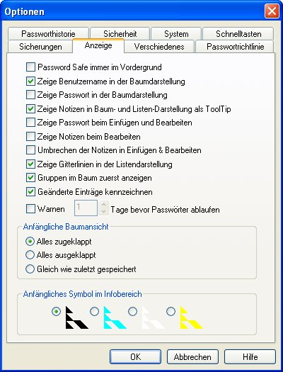

Die Funktionen im Reiter Anzeige steuern wie welche Elemente in Password Safe angezeigt werden.
Password Safe immer im Vordergrund
Wenn markiert, wird ein maximiertes Password Safe am Bildschirm immer im Vordergrund gehalten, unabhängig welche andere Anwendung den Fokus hat.
Zeige Benutzername in der Baumdarstellung
Wenn markiert, wird der Benutzername in eckigen Klammern zum Titel des Eintrages mit angezeigt.
Zeige Passwort in der Baumdarstellung
Wenn markiert, wird das Passwort in geschweiften Klammern zum Titel des Eintrages mit angezeigt.
Von dieser Einstellung wird dringend abgeraten in Umgebungen wo Leute im Vorbeigehen den Monitor sehen können.
Zeige Notizen in Baum- und Listen-Darstellung als ToolTip
Wenn markiert, werden sowohl in der Baum- als auch in der Listen-Darstellung die Notizen.
Zeige Passwort beim Hinzufügen und Bearbeiten
Wenn markiert, sind Passwörter -standardmäßig sind sie nicht sichtbar- in den Dialogen Eintrag einfügen und Eintrag bearbeiten standardmäßig doch sichtbar dargestellt. Für jeden einzelnen Eintrag kann dieses Verhalten durch Anklicken von "Anzeigen/Ausblenden" eingestellt werden.
Von dieser Einstellung wird dringend abgeraten in Umgebungen wo Leute im Vorbeigehen den Monitor sehen können.
Zeige Notizen beim Bearbeiten
Wenn markiert, werden die Notizen standardmäßig angezeigt im Bearbeiten Menü.
Wenn nicht, müssen sie im Notizenfeld klicken, um diese sehen zu können.
<
Gruppen im Baum zuerst anzeigen
Standardmäßig werden die Einträge rein alphabetisch in der Baumdarstellung angezeigt. Wenn diese Option markiert ist, werden zuerst alle Gruppen (in alphabetischer Reihenfolge) angezeigt, gefolgt von allen Einträgen, ebenfalls alphabetisch.
Zeige Gitterlinien in der angezeigten Liste
Wenn markiert, wird in der Liste eine leichte Linie angezeigt, um es wie eine Tabelle aussehen zu lassen.
Warnen N Tage bevor Passwörter ablaufen
Wenn markiert, wird Password Safe beim Lesen der Datenbank sämtliche Einträge durchsuchen (typischerweise beim Start der Anwendung), und eine Liste anzeigen mit den Einträgen deren Ablaufdatum in N Tage oder weniger eintritt.
Anfängliche Baumansicht
Dies stellt ein wie in der Baumdarstellung die Einträge dargestellt werden, beim Öffne der Datenbank.
Anfängliches Symbol im Infobereich
Dies erlaubt die Farbe des Symbols im Systembereich festzulegen wenn Password Safe gestartet wird, während dessen noch keine Datenbank geöffnet ist.